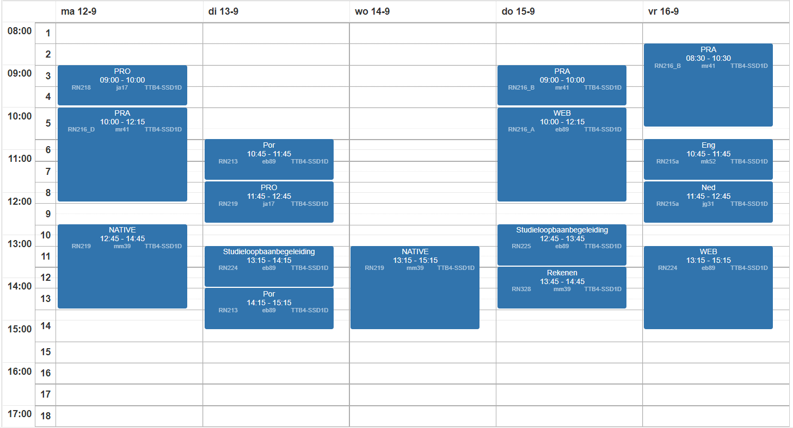

Vakken in het eerste jaar en rooster
In het eerste leerjaar krijg je 9 vakken
Bij het vak WEB krijg je lessen over WEBSITES en/of WEB-Apps maken.
Bij NATIVE krijg je lessen over Windows-apps maken, dus programma's voor op de PC/Laptop.
Bij Pro(Praktijkondersteuning) leer je bij een bedrijf zou omgaan met projecten
Bij PRA(Praktijkwerk) ga je in groepjes van 2-5 personen werken aan een project. Project
Verder heb je nog generiek vakken zoals Nederlands, Engels, Rekenen en SLB(Studieloopbaan begleiding). Je hebt ook POR(soort mentor uur).